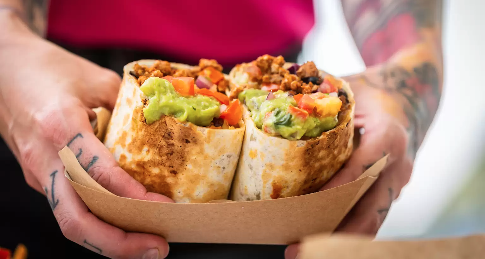

California Burrito

Description
California Burritos are San Diego's premiere Mexican dish and have been adopted all over the world.
This little burro is known for its gargantuan size and when found in a proper San Diego taco shop, they tend to be a little unwieldy
Ingredients
- Flour Tortilla
- Carne Asada
- French Fries
- Pico de Gallo
- Guacamole
- Beans
- Cheese
- Sour Cream (occasionally)
Steps
- Cut the steak into strips and dice it
- Begin cooking the diced steak
- Cook the french fries
- Smash the avocado into fresh guacamole
- Place all ingredients into a flour tortilla
- Fold small portion of the top and bottom of the tortilla inward
- Roll tortilla tightly from one side to the other
- Eat, Enjoy, and get ready for a food coma